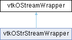

|
Etrek
|
|
Etrek
|
Wrapper for C++ ostream. Internal VTK use only. More...
#include <vtkOStreamWrapper.h>

Classes | |
| struct | EndlType |
Public Member Functions | |
| vtkOStreamWrapper & | operator<< (void(*)(void *)) |
| vtkOStreamWrapper & | operator<< (void *(*)(void *)) |
| vtkOStreamWrapper & | operator<< (int(*)(void *)) |
| vtkOStreamWrapper & | operator<< (int *(*)(void *)) |
| vtkOStreamWrapper & | operator<< (float *(*)(void *)) |
| vtkOStreamWrapper & | operator<< (const char *(*)(void *)) |
| vtkOStreamWrapper & | operator<< (void(*)(void *, int *)) |
| template<template< typename, typename, typename > class S> | |
| vtkOStreamWrapper & | operator<< (const S< char, std::char_traits< char >, std::allocator< char > > &s) |
| template<typename T> | |
| vtkOStreamWrapper & | operator<< (const vtkSmartPointer< T > &ptr) |
| vtkOStreamWrapper & | write (const char *, unsigned long) |
| ostream & | GetOStream () |
| operator ostream & () | |
| operator int () | |
| void | flush () |
| vtkOStreamWrapper (ostream &os) | |
| vtkOStreamWrapper (vtkOStreamWrapper &r) | |
| vtkOStreamWrapper & | operator<< (const EndlType &) |
| vtkOStreamWrapper & | operator<< (const vtkIndent &) |
| vtkOStreamWrapper & | operator<< (vtkObjectBase &) |
| vtkOStreamWrapper & | operator<< (const vtkLargeInteger &) |
| vtkOStreamWrapper & | operator<< (const vtkSmartPointerBase &) |
| vtkOStreamWrapper & | operator<< (const vtkStdString &) |
| vtkOStreamWrapper & | operator<< (const char *) |
| vtkOStreamWrapper & | operator<< (void *) |
| vtkOStreamWrapper & | operator<< (char) |
| vtkOStreamWrapper & | operator<< (short) |
| vtkOStreamWrapper & | operator<< (int) |
| vtkOStreamWrapper & | operator<< (long) |
| vtkOStreamWrapper & | operator<< (long long) |
| vtkOStreamWrapper & | operator<< (unsigned char) |
| vtkOStreamWrapper & | operator<< (unsigned short) |
| vtkOStreamWrapper & | operator<< (unsigned int) |
| vtkOStreamWrapper & | operator<< (unsigned long) |
| vtkOStreamWrapper & | operator<< (unsigned long long) |
| vtkOStreamWrapper & | operator<< (float) |
| vtkOStreamWrapper & | operator<< (double) |
| vtkOStreamWrapper & | operator<< (bool) |
Static Public Member Functions | |
| static void | UseEndl (const EndlType &) |
Protected Attributes | |
| ostream & | ostr |
Wrapper for C++ ostream. Internal VTK use only.
Provides a wrapper around the C++ ostream so that VTK source files need not include the full C++ streams library. This is intended to prevent cluttering of the translation unit and speed up compilation. Experimentation has revealed between 10% and 60% less time for compilation depending on the platform. This wrapper is used by the macros in vtkSetGet.h.
| vtkOStreamWrapper::vtkOStreamWrapper | ( | ostream & | os | ) |
Construct class to reference a real ostream. All methods and operators will be forwarded.
| void vtkOStreamWrapper::flush | ( | ) |
Forward the flush method to the real ostream.
| ostream & vtkOStreamWrapper::GetOStream | ( | ) |
Get a reference to the real ostream.
| vtkOStreamWrapper::operator int | ( | ) |
Forward conversion to bool to the real ostream.
| vtkOStreamWrapper::operator ostream & | ( | ) |
Allow conversion to the real ostream type. This allows an instance of vtkOStreamWrapper to look like ostream when passing to a function argument.
| vtkOStreamWrapper & vtkOStreamWrapper::operator<< | ( | const EndlType & | ) |
Forward this output operator to the real ostream.
|
inlinestatic |
Implementation detail to allow macros to provide an endl that may or may not be used.
| vtkOStreamWrapper & vtkOStreamWrapper::write | ( | const char * | , |
| unsigned long | ) |
Forward the write method to the real stream.